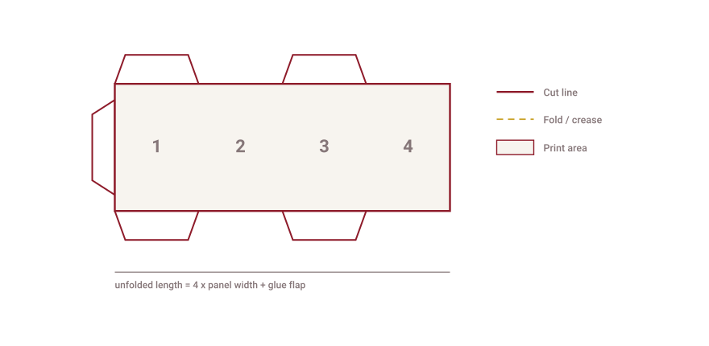
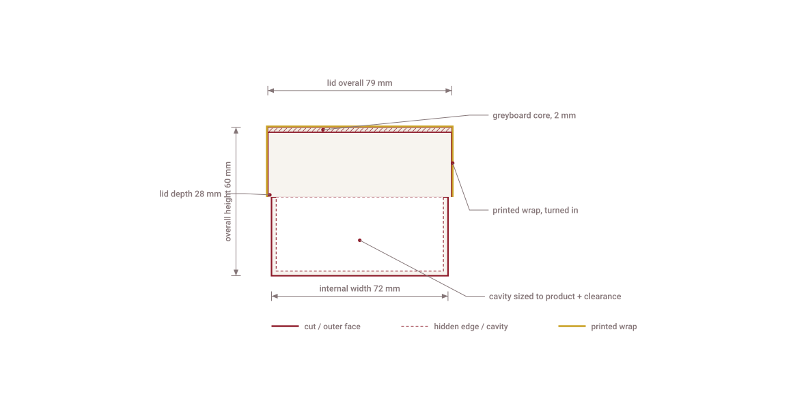

Folding cartons
One piece of printed paperboard, supplied flat and glued at the seam, erected by hand or on a packing line. The workhorse for retail shelf and e-commerce.
Structural reference
This page is the reference we work from: what each structure is for, how the drawing is laid out, and the trade terms that appear on a dieline. Nothing here is a client project — these are our own structural drawings, published so you can judge the work before you send anything.
Judge us on the dieline, the sample and a live walk of the workshop.

Reading the drawing
A dieline is read by convention. Once you know these four, you can check any drawing we send — including whether the grain runs the way the box needs it to.
Structures
Three families cover most briefs. The drawing below each one is ours — an illustration of the structure, not a photograph of a delivered job.
One piece of printed paperboard, supplied flat and glued at the seam, erected by hand or on a packing line. The workhorse for retail shelf and e-commerce.

A greyboard body wrapped in printed paper, made up rather than folded from one sheet. Stiffer, heavier, and the structure that carries a gift set.

The parts that hold the product still: a die-cut tray, a sleeve that carries the print, or a fitment cut to the shape of what goes inside.
Section through a rigid box
A rigid box is not one material. It is a greyboard core, cut and assembled, then wrapped in printed paper that turns in over the edges. The section below is drawn to scale from our own standard construction — it is the drawing we would send with a quote, not a marketing diagram.

This is the same structure as the rigid boxes on the products page, drawn to be checked rather than admired.
Materials and finishing
These are the terms we use in a quote, in the same words. If a supplier answers these loosely, the sample will show it.
Next
If you already have a dieline, we will quote from it and tell you if anything on it will cause trouble. If you do not, send the product dimensions and we will draw the structure — that costs you nothing.